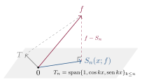
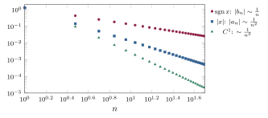
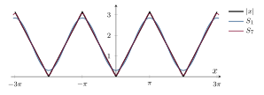
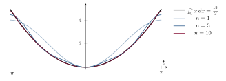
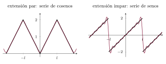
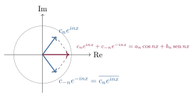

Sea f una función continua en [−π,π], f(−π)=f(π), y supongamos que f(x)∼2a0+n=1∑∞ancosnx+bnsennx. Si la función f es continuamente derivable a trozos en [−π,π], entonces f′(x)∼n=1∑∞−nansennx+nbncosnx.
Demostraciónmostrar
La existencia de la serie de Fourier de f′ se sigue dado que f es continuamente derivable a trozos en [−π,π] (f′ está definida salvo en un número finito de puntos y es acotada y continua a trozos, luego integrable) y f es continua en [−π,π]. Entonces, si f′(x)∼2α0+n=1∑∞αncosnx+βnsennx, dado que f(−π)=f(π), α0=π1∫−ππf′(t)dt=π1(f(π)−f(−π))=0,αn=π1∫−ππf′(t)cosntdt=π1f(t)cosnt−ππ+πn∫−ππf(t)senntdt=nbn,βn=π1∫−ππf′(t)senntdt=π1f(t)sennt−ππ−πn∫−ππf(t)cosntdt=−nan. Aquí la integración por partes se hace en cada pieza [tj−1,tj] donde f∈C1; como f es continua, los términos de borde en los puntos interiores tj se cancelan al sumar, y quedan sólo los de ±π: f(π)cosnπ−f(−π)cosnπ=0 y f(t)sennt−ππ=0. La igualdad ∫f′=f(π)−f(−π) se obtiene del mismo modo.
Para el siguiente lema necesitamos la desigualdad de Bessel.
Sea f tal que f2 es absolutamente integrable en [−π,π], con coeficientes de Fourier an,bn, y sea T(x)=2A0+∑k=1n(Akcoskx+Bksenkx) un polinomio trigonométrico cualquiera de grado ≤n. Entonces ∥f−T∥2=∥f∥2−π(2a02+k=1∑n(ak2+bk2))+π(2(A0−a0)2+k=1∑n((Ak−ak)2+(Bk−bk)2)). En consecuencia, Sn(x;f) es el polinomio trigonométrico de grado ≤n más cercano a f en media cuadrática, y 2a02+n=1∑∞(an2+bn2)≤π1∫−ππf2(x)dx.
Demostraciónmostrar
Por el Lema 9.7 y la definición de los coeficientes, ⟨f,T⟩=π(2A0a0+k=1∑n(Akak+Bkbk)),∥T∥2=π(2A02+k=1∑n(Ak2+Bk2)). Luego ∥f−T∥2=∥f∥2−2⟨f,T⟩+∥T∥2, y completando cuadrados (A2−2Aa=(A−a)2−a2) se obtiene la identidad. El último sumando es ≥0 y se anula sólo si T=Sn(⋅;f); tomando T=Sn queda 0≤∥f−Sn∥2=∥f∥2−π(2a02+∑k≤n(ak2+bk2)). Haciendo n→∞ se obtiene la desigualdad de Bessel.

La suma parcial Sn(x;f) es la proyección ortogonal de f sobre los polinomios trigonométricos de grado ≤n: el error f−Sn es ortogonal a ese subespacio y cualquier otro polinomio T queda más lejos de f. De aquí la desigualdad de Bessel.
Supongamos que f tiene en un segmento derivadas continuas de orden hasta k−1 inclusive y una derivada continua a trozos de orden k (k≥1), con f(j)(−π)=f(j)(π),j=0,1,…,k−1, y f(x)∼2a0+∑n=1∞ancosnx+bnsennx. En este caso ∣an∣≤nkεn,∣bn∣≤nkεn, donde εn>0 y ∑n=1∞εn2<∞.
Demostraciónmostrar
Al aplicar el teorema anterior k veces (a f,f′,…,f(k−1), que cumplen sus hipótesis), obtenemos f(k)(x)∼n=1∑∞αncosnx+βnsennx, donde αn=±nkan, βn=±nkbn o bien αn=±nkbn, βn=±nkan. Según la desigualdad de Bessel (Proposición 10.2, aplicable pues f(k) es continua a trozos y acotada), n=1∑∞αn2+βn2≤π1∫−ππ[f(k)(x)]2dx. Sea εn=αn2+βn2 (si fuese 0, se reemplaza por n1, que no altera la convergencia de ∑εn2); así ∑n=1∞εn2 converge y ∣an∣≤nkmax(∣αn∣,∣βn∣)≤nkαn2+βn2=nkεn,∣bn∣≤nkεn.
Supón que f tiene en [−π,π] derivadas continuas hasta el orden k−1 inclusive y una derivada continua a trozos de orden k (k≥1), con f(j)(−π)=f(j)(π), j=0,1,…,k−1. Entonces la serie de Fourier de f converge uniforme y absolutamente en [−π,π] a la función f, y ∣f(x)−Sn(x;f)∣≤nk−1/2ηn, donde limn→∞ηn=0. Podemos decir que en [−π,π] se cumple uniformemente la estimación f(x)−Sn(x;f)=o(n−k+1/2),n→∞.
Demostraciónmostrar
Sean f(x)∼2a0+∑m=1∞amcosmx+bmsenmx y Sn(x;f)=2a0+∑m=1namcosmx+bmsenmx. Según el Lema 10.3, ∣am∣≤mkεm, ∣bm∣≤mkεm, donde εm son tales que ∑m=1∞εm2<∞. Estimemos el resto rn(x) de la serie: ∣rn(x)∣=m=n+1∑∞amcosmx+bmsenmx≤m=n+1∑∞∣am∣+∣bm∣≤2m=n+1∑∞mkεm≤2m=n+1∑∞εm2m=n+1∑∞m2k1, por la desigualdad de Cauchy–Schwarz ∑n=1Nunvn≤∑n=1Nun2∑n=1Nvn2, pasando al límite N→∞. Sea χn=∑m=n+1∞εm2; como ∑εm2<∞, entonces limn→∞χn=0. En el segmento [m−1,m], m2k1≤x2k1; entonces m2k1≤∫m−1mx2kdx. Así, m=n+1∑∞m2k1≤m=n+1∑∞∫m−1mx2kdx=∫n∞x2kdx=(2k−1)n2k−11, así ∣rn(x)∣≤22k−1χn⋅n2k−11. Sea ηn=2k−12χn; limn→∞ηn=0, y ∣rn(x)∣≤nk−1/2ηn=o(n−k+1/2).
Por el Corolario 9.30 se sigue la convergencia hacia f(x) (en ±π también, pues f(−π)=f(π) y f es continua); así rn(x)=f(x)−Sn(x;f), y la convergencia uniforme con la estimación de rn(x) queda demostrada. La convergencia absoluta se da, dado que ∑m=n+1∞∣am∣+∣bm∣≤nk−1/2ηn.
Esto nos dice que entre más suave es la función, tanto mayor es la velocidad de convergencia hacia ella de la serie de Fourier.

Entre más suave es la función, más rápido decaen sus coeficientes de Fourier (escala log–log): salto ⇒1/n; continua con derivada a trozos ⇒1/n2; derivada continua y segunda a trozos ⇒1/n3 (p.ej. x(π−∣x∣)).
De este teorema proviene, en particular, para k=1, que la serie de Fourier de toda función periódica de periodo 2π, continua y continuamente derivable a trozos, converge uniformemente sobre todo el periodo hacia la misma función.

∣x∣ prolongada periódicamente es continua y derivable a trozos: su serie converge uniformemente (coeficientes O(1/n2)), en contraste con la onda cuadrada.
Para f(x)=∣x∣ se cumplen las hipótesis con k=1 (∣−π∣=∣π∣). Por el Teorema 10.1, derivando término a término la serie del Ejemplo 9.12(c), f′(x)=sgnx∼π4k≥0∑2k+1sen(2k+1)x, que es exactamente la serie de la onda cuadrada del Ejemplo 9.12(b). En cambio, f(x)=x no cumple f(−π)=f(π) y la serie derivada 2∑(−1)n+1cosnx ni siquiera tiene términos que tiendan a 0.
10.2 Completitud del sistema trigonométrico. Igualdad de Parseval
Sea f integrable Riemann en [−π,π] con coeficientes de Fourier an,bn. Entonces n→∞lim∫−ππ(f(x)−Sn(x;f))2dx=0yπ1∫−ππf2(x)dx=2a02+n=1∑∞(an2+bn2). En particular, el sistema trigonométrico es completo.
Demostraciónmostrar
Sea ∣f∣≤M y ε>0.
Paso 1. Como en el Lema 9.19, con una suma inferior de Darboux obtenemos una función escalonada φ con φ≤f, ∣φ∣≤M y ∫−ππ∣f−φ∣<ε. Como ∣f−φ∣≤2M, ∥f−φ∥2≤2M∫∣f−φ∣<2Mε.
Paso 2. Modificamos φ en intervalos de longitud h a la izquierda de cada uno de sus finitos saltos, uniendo linealmente los valores, y en [−π,−π+h] y [π−h,π] la llevamos linealmente a 0. Obtenemos g continua, lineal a trozos, con ∣g∣≤M y g(−π)=g(π)=0. Si φ tiene p saltos, g difiere de φ en un conjunto de longitud ≤(p+2)h, y ∥φ−g∥2≤4M2(p+2)h<ε para h pequeño.
Paso 3.g es continua, derivable a trozos y g(−π)=g(π): por el Teorema 10.4 (k=1), Sn(x;g)→g uniformemente; luego existe N con ∥g−SN(⋅;g)∥2≤2πsup∣g−SN(⋅;g)∣2<ε.
Por la desigualdad triangular, ∥f−SN(⋅;g)∥≤2Mε+2ε. Como SN(⋅;g) es un polinomio trigonométrico de grado ≤N≤n, la Proposición 10.2 da, para n≥N, ∥f−Sn(⋅;f)∥≤∥f−SN(⋅;f)∥≤∥f−SN(⋅;g)∥≤2Mε+2ε. Así ∥f−Sn(⋅;f)∥→0, y por la identidad de la Proposición 10.2 con T=Sn se obtiene la igualdad de Parseval.
El mismo resultado vale si f es integrable en sentido impropio con ∫−ππf2<∞: basta aproximar primero f en media cuadrática por una función acotada que coincide con f fuera de pequeños entornos de sus puntos singulares.
Sea f una función continua en el segmento [−π,π] y 2a0+∑n=1∞ancosnx+bnsennx su serie de Fourier. Tenemos, para t∈[−π,π], ∫0tf(x)dx=∫0t2a0dx+n=1∑∞∫0t(ancosnx+bnsennx)dx=2a0t+n=1∑∞nansennt+nbn(1−cosnt).
Demostraciónmostrar
Sea F(t)=∫0t(f(x)−2a0)dx, continua en [−π,π] con derivada continua F′(t)=f(t)−2a0, y F(π)−F(−π)=∫−ππf(x)dx−πa0=0. Por el Teorema 10.4 (con k=1), su serie de Fourier converge hacia ella y uniformemente: F(t)=2A0+n=1∑∞Ancosnt+Bnsennt,An=π1∫−ππF(t)cosntdt=π1F(t)nsennt−ππ−nπ1∫−ππ(f(t)−2a0)senntdt=−nbn, y análogamente Bn=π1∫−ππF(t)senntdt=−π1F(t)ncosnt−ππ+nπ1∫−ππ(f(t)−2a0)cosntdt=nan (el término de borde se anula porque F(π)=F(−π)). Hallemos A0: F(0)=0, entonces 2A0=−n=1∑∞An=n=1∑∞nbn (serie convergente, por la convergencia de la serie de F en t=0). Entonces F(t)=n=1∑∞nansennt+nbn(1−cosnt), y como ∫0tf=2a0t+F(t), se obtiene el teorema.
Para f(x)=x (an=0, bn=n2(−1)n+1) obtenemos, uniformemente en [−π,π], 2t2=n=1∑∞n22(−1)n+1(1−cosnt). Con t=π: 2π2=∑n imparn24, de nuevo ∑k≥0(2k+1)21=8π2. Observa que la serie de x no converge uniformemente, pero la integrada sí.

Integrando término a término la serie de x (que no converge uniformemente) se obtiene ∑n22(−1)n+1(1−cosnt), que sí converge uniformemente a 2t2 en [−π,π].
10.4 Intervalo arbitrario. Notación compleja
La teoría de las series trigonométricas de Fourier de las funciones 2π-periódicas se extiende al caso de funciones periódicas de cualquier periodo 2l. Para esto, resulta suficiente aplicar al segmento [−l,l] sobre el segmento [−π,π] la aplicación lineal y=lπx,−l≤x≤l,−π≤y≤π. Se obtiene la serie 2a0+n=1∑∞ancoslnπx+bnsenlnπx,a0=l1∫−llf(t)dt,an=l1∫−llf(t)coslnπtdt,bn=l1∫−llf(t)senlnπtdt. En efecto, si g(y)=f(πly), entonces π1∫−ππg(y)cosnydy=l1∫−llf(t)coslnπtdt con el cambio y=lπt, y lo mismo para los senos; todos los teoremas anteriores se trasladan a f mediante este cambio de variable.
Si f es par, f(x)∼2a0+n=1∑∞ancoslnπx,an=l2∫0lf(t)coslnπtdt. Si f es impar, entonces f(x)∼n=1∑∞bnsenlnπx,bn=l2∫0lf(t)senlnπtdt. (Si f es par, f(t)senlnπt es impar y su integral sobre [−l,l] es 0, mientras que f(t)coslnπt es par y su integral es el doble de la integral sobre [0,l]; análogamente si f es impar.)

La función f(x)=x en [0,l] (l=2) puede extenderse de forma par (serie sólo de cosenos, converge uniformemente) o impar (serie sólo de senos, con saltos en ±l).
Notación compleja. Si f(x)∼2a0+∑n=1∞ancosnx+bnsennx, usando cosnx=21(einx+e−inx),sennx=2i1(einx−e−inx)=2i(e−inx−einx),f(x)∼2a0+n=1∑∞21(an−bni)einx+21(an+bni)e−inx. Suponiendo c0=2a0,cn=21(an−bni),c−n=21(an+bni),f(x)∼n=−∞∑∞cneinx,cn=21(an−bni)=2π1∫−ππf(x)(cosnx−isennx)dx=2π1∫−ππf(x)e−inxdx,c−n=2π1∫−ππf(x)einxdx. La fórmula cn=2π1∫−ππf(x)e−inxdx vale para todo n∈Z (para n=0 da 2a0), y las sumas parciales simétricas ∑n=−NNcneinx coinciden con SN(x;f), de modo que toda la teoría anterior se aplica a ellas. Así, f(x)∼2π1n=−∞∑∞einx∫−ππf(t)e−intdt.

Para f real, c−n=cn: los términos cneinx y c−ne−inx son conjugados y su suma (vino) es real, igual a ancosnx+bnsennx.
Ojo, parcero: errores que veo en los parciales
Parseval sin el factor de a0 → 2a02+∑(an2+bn2)
c−n=cn → para f real, c−n=cn
✦Practica activa
Retos para afianzar las ideas del capítulo: arma la demostración con los bloques en el orden correcto y caza el paso falso de un argumento.
🧩 Ordena la soluciónParseval y ζ(2)
Usa la serie de f(x)=x en (−π,π), con bn=n2(−1)n+1, para hallar ∑n21.
🔍 Encuentra el errorForma compleja
Se relacionan los coeficientes complejos cn con an,bn (n≥1).